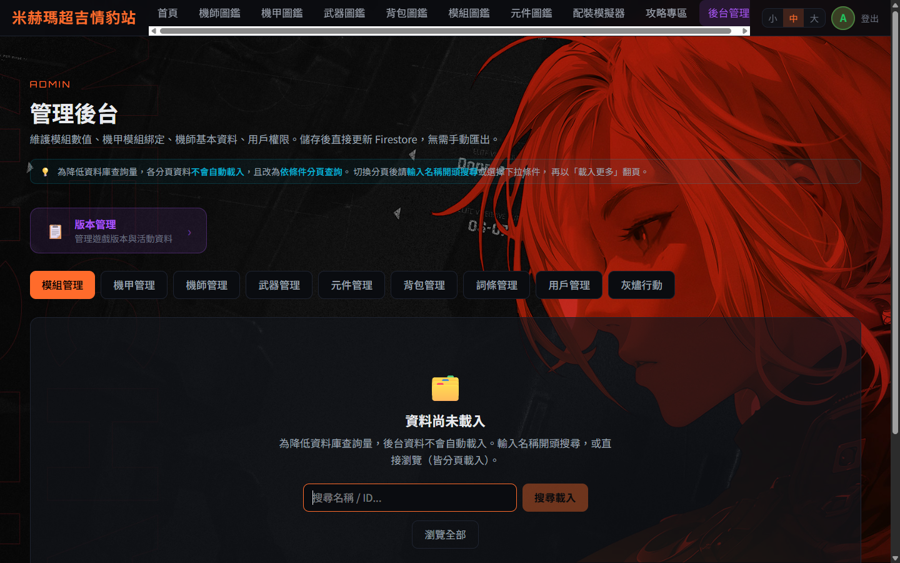
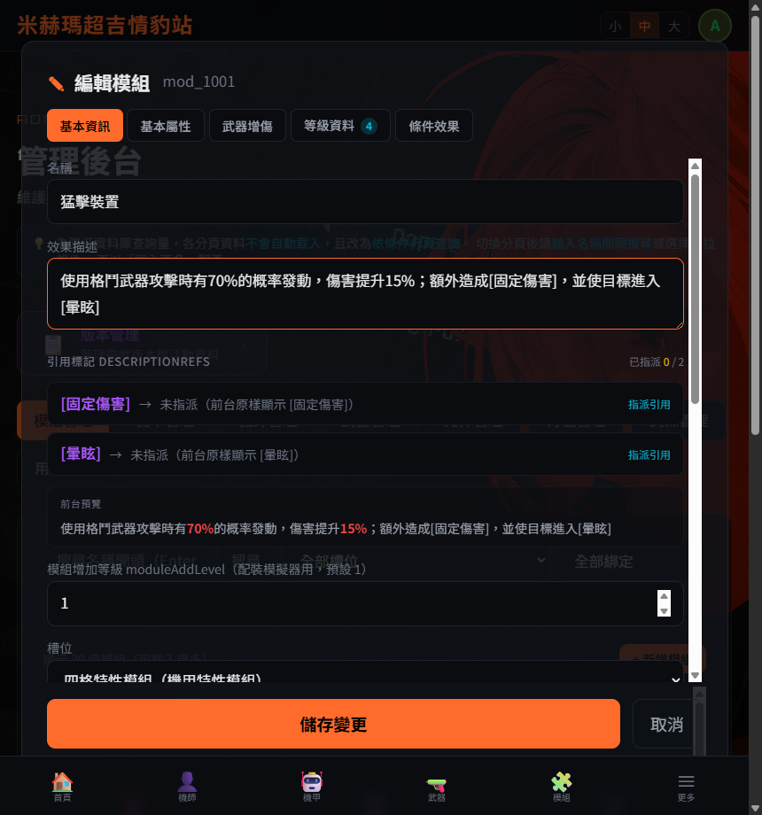
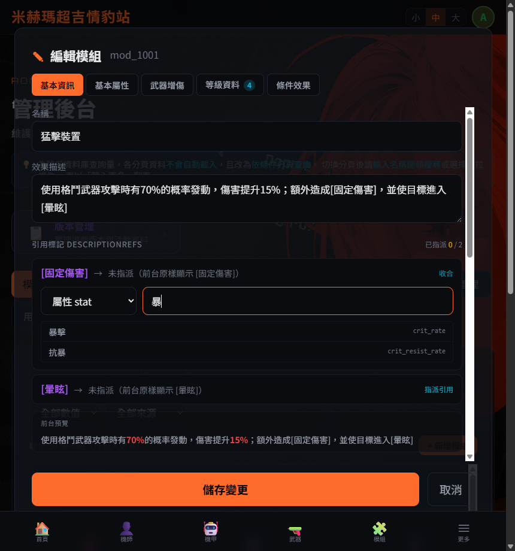
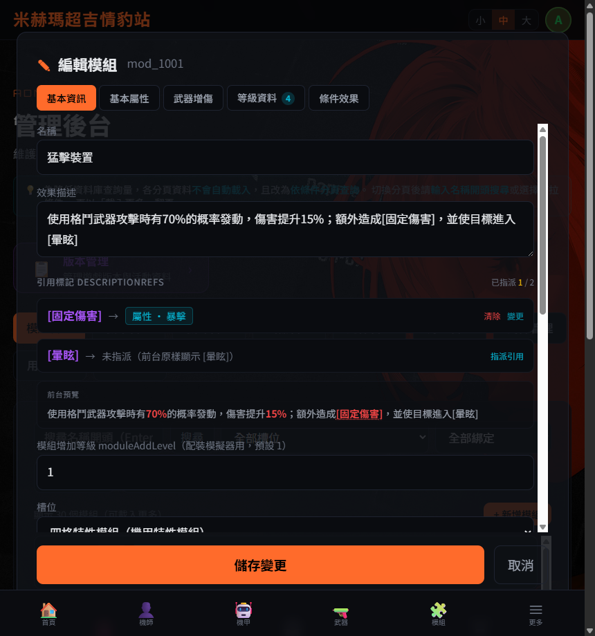
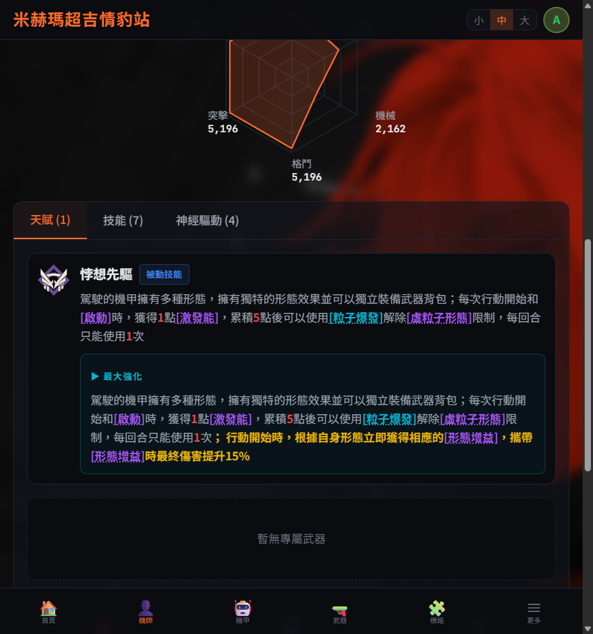
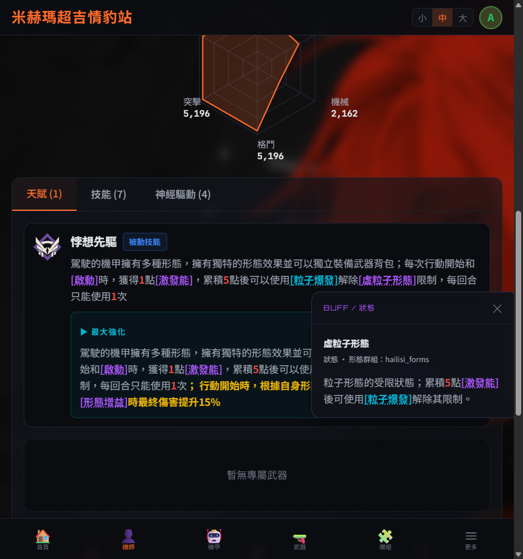

Read First
!最重要的一件事
描述裡的方括號 [ ] 請勿手動刪除。
它不是多餘符號、也不是顯示錯誤——它是「引用標記」。系統靠這對方括號辨識「這個詞要做成可點擊的引用」。 一旦把 [激發能] 的方括號刪成「激發能」，這個詞就會失去可點連結，前台不再能懸停預覽或點擊查看詳情。
它不是多餘符號、也不是顯示錯誤——它是「引用標記」。系統靠這對方括號辨識「這個詞要做成可點擊的引用」。 一旦把 [激發能] 的方括號刪成「激發能」，這個詞就會失去可點連結，前台不再能懸停預覽或點擊查看詳情。
如果你在前台看到帶著方括號的純文字（例如 [固定傷害]），那代表「這個詞還沒被指派引用」的正常狀態，不是錯字。 正確的處理方式是到後台用引用挑選器把它指派掉，而不是把方括號刪掉。
Concept
1引用標記是什麼
系統把一段描述拆成兩部分保存：
- 描述原文：保留遊戲原文，[xxx] 方括號原樣保留。
- 引用側錄（descriptionRefs）：一張對照表，把每個 [xxx] 指向某個實體（詞條、BUFF、技能、機師、武器…）。這張表由你在後台用引用挑選器填寫。
顯示規則：前台顯示時會掃描描述裡的每個 [xxx]——
有指派的渲染成可點擊的彩色引用 [激發能]；
沒指派的就原樣顯示 [激發能]，不會報錯（優雅降級）。
辨識條件只有方括號。想讓哪個詞變成可引用，就用
[ ] 把它框起來；不想要引用就不要框。沒有其他符號（不是大括號、不是 @），就是方括號。
Where
2哪些地方可以標引用
後台所有「描述欄位」的下方都掛了引用挑選器，做法完全一致：
| 後台分頁 | 可標引用的描述欄位 |
|---|---|
| 模組管理 | 編輯模組 → 基本資訊 → 效果描述 |
| 武器管理 | 編輯武器 → 技能編輯器 → 每一筆技能的 技能描述 |
| 元件管理 | 編輯元件 → 完整效果描述 |
| 背包管理 | 編輯背包 → 勾「有主技能」→ 技能描述 |
| 詞條管理 | 編輯詞條 → 詞條解釋（詞條本身的說明裡也可再引用其他詞） |
| 機師管理 | 技能分頁 → 每一筆技能的 效果說明 |
How to
3操作步驟（以模組管理為例）
1
進入後台、開啟要編輯的項目
登入管理者帳號後進入「管理後台」，切到對應分頁（此處示範「模組管理」），用名稱搜尋或「瀏覽全部」找到項目並點開編輯。

2
在描述裡用方括號框住要引用的詞
在描述欄位把關鍵詞用 [ ] 框起來（例如 [固定傷害]、[暈眩]）。描述欄下方的「引用標記」區會即時列出所有方括號詞，並顯示「已指派 0 / 2」。下方還有「前台預覽」即時呈現實際效果。

3
點「指派引用」，選類型並挑選目標
點某個詞右側的「指派引用」，會展開挑選介面：先選引用類型（詞條 / BUFF / 技能 / 屬性 / 機師 / 機甲 / 武器 / 模組 / 背包 / 元件），再用搜尋框找到目標，點清單裡的候選即完成指派。

4
確認指派結果與前台預覽
指派完成後，該詞會顯示一枚藍色 chip（類型 · 目標名稱），計數變成「已指派 1 / 2」，「前台預覽」裡這個詞也立刻變成可點擊的彩色樣式。仍未指派的詞（如 [暈眩]）維持原樣。需要時可按「清除」或「變更」。

5
儲存變更
按下「儲存變更」即寫入資料庫並更新全站快取。前台對應頁面隨即生效——無須任何額外匯出或工程介入。
Result
4指派後，前台長這樣
以機師海莉絲的天賦「悖想先驅」為例，描述裡已指派的詞全部成為綠色可點引用：


Notes
5注意事項與常見問題
Q：前台看到帶方括號的字，是不是錯字？能不能把括號刪掉？
不是錯字，請勿刪括號。那只是「該詞尚未指派引用」的正常顯示。正解是到後台把它指派掉；刪掉方括號會讓它永遠無法成為引用，且原本已建好的引用也會失效。
不是錯字，請勿刪括號。那只是「該詞尚未指派引用」的正常顯示。正解是到後台把它指派掉；刪掉方括號會讓它永遠無法成為引用，且原本已建好的引用也會失效。
- 方括號內文字要完全一致：含空白與大小寫。[ 固定傷害 ] 和 [固定傷害] 會被視為兩個不同的詞。
- 同名的詞共用一次指派：描述裡出現多次 [固定傷害]，只要指派一次，全部位置都會生效。
- 空括號不算：
[]中間至少要有一個字才會被辨識。 - 不支援巢狀：不要寫 [外層[內層]]，會被截斷成非預期結果。
- 機制詞（如固定傷害、啟動）建議指向「詞條 term」：但詞條要能被指派，必須先到「詞條管理」分頁建立該詞條；若詞條庫尚未建立，挑選清單會顯示「查無候選」，此時先去新增詞條即可。
- 不指派也沒關係：沒指派的詞前台原樣顯示、不會報錯。引用是「加分」，不是「必填」。
Reference
6引用類型對照
| 類型 | 指向 | 候選來源 |
|---|---|---|
| 詞條 term | 機制關鍵詞的解釋（固定傷害、啟動…） | 詞條管理（需先建立） |
| BUFF / 狀態 buff | 增益／減益／形態狀態 | BUFF 資料 |
| 技能 skill | 機師技能 | 機師技能庫 |
| 屬性 stat | 數值屬性（暴擊、命中…） | 內建屬性表（一律可用） |
| 機師 / 機甲 / 武器 / 模組 / 背包 / 元件 | 對應的實體頁 | 各自的資料集合 |